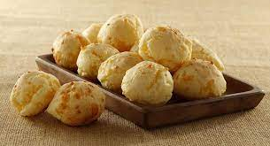

Cunapez Bolivian Cheese Bread

Description
The nice Crispy outside with the melted soft cheese inside makes this little roll a good source of energy for the long travel ahead. Enjoy!
Ingredients
- 1 cup tapioca flour (Bob’s Red Mill)
- 2 cups shredded monterrey jack (or preferably Queso Fresco)
- 1 tsp baking powder
- 1 egg
- 1-2 tbs milk
Preparation
- Assemble the ingredients and preheat the oven to 450F.
- Mix the tapioca flour and the baking powder in a mixing bowl. Add the cheese and mix well until cheese is covered in the flour.
- Add the egg to the mix of cheese and flour, and mix. If the dough starts sticking together, you don’t need to add milk if it keeps separating add 1 tbs of milk at that time.
- In this case I added one tbs of milk and made a nice ball of dough. Divide the dough in 10 pieces of the same size and shape them into balls. Put a thumbprint in the bottom of each ball (to help with even puffing in the oven).
- Place finger print side down on a cooking sheet. You can use a parchment paper. Bake for 15 min at 450F, you want them to be nicely golden and dry.